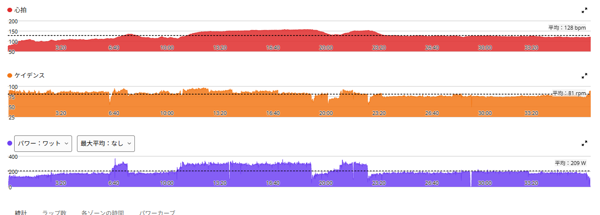
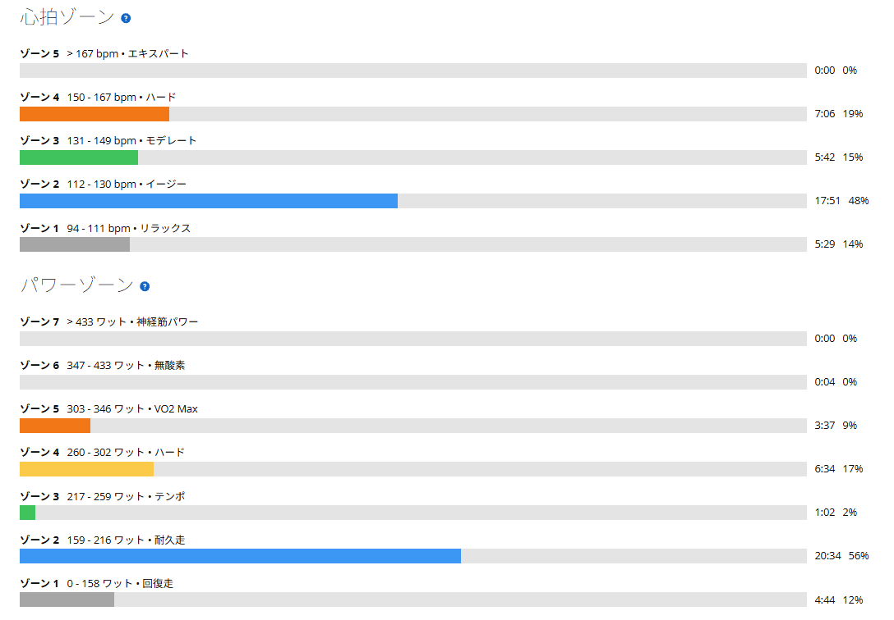

8分×4本に初挑戦して撃沈。でも冬の主力にしたいと思った話
今日はローラーで新メニューに挑戦した。8分×4本、レスト2分。おとといは唐沢ゴルビー、昨日はSST20分×3本。普通なら休む流れで、3日目に初めてのメニューへ手を出した。結果は、8分1本と少しで終了。見事に撃沈である。

5分より長く、20分より強く
これまでの高強度は、外なら唐沢山のゴルビー、室内ならSST20分×3本が中心だった。そこにもう一つ、5分より長く、20分より高い強度で踏むメニューを加えてみたかった。
きっかけは、Seilerらの2013年の研究を紹介した投稿。4分・8分・16分のインターバルを比べたところ、8分×4本のグループで有酸素能力の指標の改善が大きかったという内容だった。要旨を見ると、対象はトレーニングを積んだ趣味の自転車乗り35人で、期間は7週間、インターバルの各グループは9人。これだけで「8分×4本が誰にでも最強」とは言えないし、自分に同じ効果が出るとも限らない。それでも、十分高い出力をある程度まとまった時間続けるという考え方は、今の課題に合っている気がした。
約18km・NP232W・TSS39
- 全体17.74km / 36分38秒 / 運動量460kJ
- 負荷平均209W / NP232W / IF0.802 / TSS38.7 / FTP設定289W
- 心拍・回転平均128bpm / 最大158bpm / 平均81rpm
- 効果有酸素TE2.5（主な効果：ベース）
- 1本目8分 / 296W / NP295W / 心拍平均150bpm・最大158bpm / 87rpm
- 2本目約1分半で中断 / 285W / NP289W / 心拍平均148bpm・最大154bpm / 83rpm

Garminの主な効果は「ベース」。これは途中で切り上げた全体の評価で、狙っていた8分×4本を達成したという意味ではない。
1本目は8分走れた。2本目は約1分半で止まった
ウォームアップ約11分の後、1本目へ。平均296Wで8分を走り切った。FTP289Wの約102％。事前には300〜305Wあたりを目安に考えていたが、実際の平均はそこまで届かなかった。まず1本は完遂。ただ、これをあと3本、しかもレスト2分で繰り返すとなると、話は別だった。
2分休んで2本目に入ったが、約1分半、平均285Wのところで続けられなくなった。予定していた3本目、4本目には進めず、残りの約14分はクールダウン。8分×4本で32分踏むはずが、実際に踏めたのは10分弱。初回からなかなか派手な失敗だ。
並べてみると、少々欲張りすぎだった
おとといの唐沢ゴルビーは5分を321→332→337→335→341Wで5本、TSS約111。昨日のSST20分×3本は270→271→274Wと揃えたものの、めちゃくちゃきつくて、TSS約110。そこへ今日の8分×4本である。
ただ、今回の結果だけで「自分には8分走が向いていない」とは言えない。出力設定が適切だったのか、蓄積疲労の影響がどのくらいあったのか、そこはまだ分からない。
失敗したのに、かなり気に入った
不思議なのだが、うまくいかなかったのに、メニュー自体はかなり良いと感じた。5分のゴルビーより長く、SSTの20分より高い強度を狙える。休みは2分しかない。高い出力を長く維持し、短い回復でまた踏む。
| メニュー | 1本の長さ | 出力 |
|---|---|---|
| 唐沢ゴルビー（10/29） | 5分 | 321〜341W |
| 今日の1本目 | 8分 | 296W |
| SST（10/30） | 20分 | 270〜274W |
今の自分が伸ばしたい「高めの出力を続ける能力」に、うまく刺激を入れられそうである。富士ヒルゴールドを目指すうえでも、この持続力は鍛えたい。1回目は全然できなかった。でも、だからこそ続けてみたくなった。
外はゴルビー、室内は8分×4本
これから冬になると、山は路面凍結の心配が増える。唐沢でゴルビーをやりたくても、路面状況次第では行けない日も出てくるはずだ。そんな日にローラーで積めるメニューが一つ増えるのは悪くない。そこで、今後の方針を少し整理した。
- 外の高強度唐沢ゴルビー
- 室内の高強度8分×4本
- 持続力の基礎SST20分×3本
- 土台ベース走も続ける
8分走は、ゴルビーを毎回そのまま置き換えるというより、冬場の室内高強度の主力候補として育てていくつもりである。
次は4本揃う出力を探す
次回はまず、疲労が少ない状態で8分×4本、レスト2分に再挑戦する。今日の285Wは296Wで8分踏んだ2分後の数字なので、次回は1本目から285〜290Wを目安にする。ただ、これも今日の1回で決まった数字ではない。そこに固執せず、まずは4本揃う出力を見つけて、そこから少しずつ上げていく。そう考えると、失敗した今日も次につながる実験だった。
明日は高強度を重ねず、1時間半前後の軽いアクティブレストにする予定。出力は上げず、いったん疲労を落とす。初挑戦は撃沈。でも、冬の練習の楽しみが一つ増えた。
参考：Seiler S, et al. Adaptations to aerobic interval training: interactive effects of exercise intensity and total work duration. Scand J Med Sci Sports. 2013;23(1):74-83.（要旨を確認。全文は未確認）